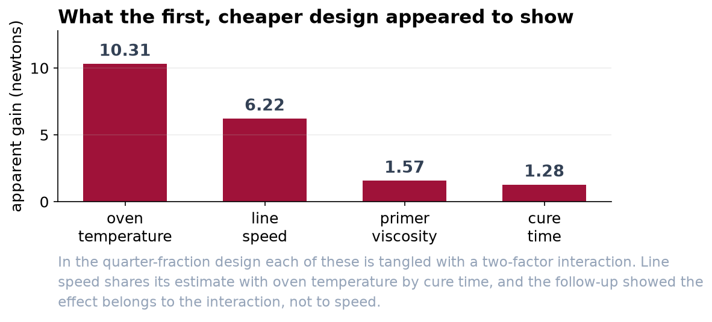
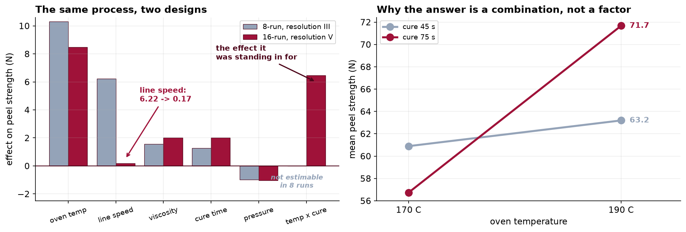

Line Speed Was Never the Lever
The eight-run study last quarter was not wrong about the arithmetic. It was reading one effect under another effect's name.
Recommendation
Run the line at 190 °C with a 75-second cure. Confirmed on forty fresh panels, that combination gains 9.46 newtons of peel strength over the current baseline, with a margin of about one newton either way. Put line speed back to 12 m/min. It has no measurable effect on peel strength, and the slower setting is costing throughput for nothing.
What went wrong last quarter
The eight-run study reported line speed as the second-biggest factor, at about six newtons. That number was real. It just did not belong to line speed.
An eight-run study cannot look at five factors independently. There is not enough information in eight runs, so some factors have to share. In that design, line speed shared with the combination of oven temperature and cure time, which means the study measured the two of them added together and printed the total under the line-speed heading. There was no way to tell from the output that this had happened.
We slowed the line and measured forty panels. The change was −0.16 newtons, with an interval running from about one newton down to two thirds of a newton up. The study had promised six. Forty panels is what it cost to find out, and it is the reason we knew to look again.

What the sixteen-run study found

- Oven temperature is the largest single factor, worth about 8.5 newtons on its own.
- Temperature and cure time work together, and that combination is worth another 6.5. Raising the temperature gains 2.3 newtons at a 45-second cure and 14.9 at a 75-second cure.
- At the low temperature, a longer cure makes the coating worse, from 60.9 down to 56.7 newtons. This is why neither setting can be recommended on its own.
- Line speed is 0.17 newtons, which is indistinguishable from zero.
- Viscosity and nozzle pressure both matter a little, and their combination matters slightly more than either does alone. Neither is worth changing before the temperature and cure decision is made.
What to do differently next time
- Ask what a proposed study cannot separate, before it runs. That question has a precise answer that takes minutes to work out, and it is the difference between the two studies described here.
- Always confirm on fresh material before changing the line. Both recommendations in this work were tested that way. Forty panels is cheap next to a permanent process change.
- Keep blocking by primer batch. Running each replicate on one batch, rather than mixing them, made every measurement in this study about a third more precise at no extra cost.
- Keep randomizing the run order. The oven drifts across a shift. Running settings in a convenient order would have quietly moved results by about 0.4 newtons, which is invisible against temperature and large against nozzle pressure.
What this study does not tell you
Every factor was tested at exactly two settings, so the analysis assumes that what happens between them is a straight line. It is possible that 200 °C is better still, or considerably worse, and nothing here can say which. If the temperature recommendation is worth pushing further, that is a separate short study with three or more temperature levels.
The response measured was peel strength alone. Longer cure times cost oven capacity and higher temperatures cost energy, and neither appears in these numbers. The 9.46 newtons is a gain in the quantity we set out to measure, and whether it is worth its running cost is a decision for the plant, not for this analysis.